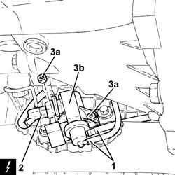

1064A28 LEFT HAND OR RIGHT HAND SLEEVE (ONE) JOINING LEFT HAND OR RIGHT HAND CYLINDER HEAD TO TURBOCHARGER - R+R
- Path
- Procedures > 10 ENGINE UNIT > 1064 TURBO CHARGING SYSTEM > 1064A TURBO CHARGER ASSEMBLY > 1064A28 LEFT HAND OR RIGHT HAND SLEEVE (ONE) JOINING LEFT HAND OR RIGHT HAND CYLINDER HEAD TO TURBOCHARGER - R+R
- Kind
- repair procedure (removal / refitting; the operation number is the code)
- Applies to
- engines: 1.9 JTD 16V; all production periods
- Interactive page
- https://sloeber94.github.io/elrnDB-aGt/en/#/125001067
Applies to: engines: 1.9 JTD 16V; all production periods
 Removing
Removing
 Refitting
RefittingPosition the vehicle on the ramp
Ensure that the ignition key is in the OFF position, then disconnect the negative battery terminal (-).
Name | Connector | |
|---|---|---|
- | Battery | See A1B BATTERY ( BATTERY NEGATIVE ) |
Proceed with removal
Op. 7055B54 UNDER-ENGINE GUARD - R R
1. Disconnect the vacuum pipes from the solenoid valve for the turbocharger vanes actuator.
2. Disconnect the electrical connection from the turbocharger vane actuator solenoid.
3. Undo the nuts (3a) and remove the turbocharger vane position actuator solenoid valve (3b).
Name | Connector | |
|---|---|---|
2 | Variable geometry turbine solenoid valve | See L36 VARIABLE GEOMETRY TURBINE SOLENOID VALVE ( CONNECTORS ) |

Applies to: engines: 1.9 JTD 16V; all production periods
Refitting
RemovingFit the turbocharger vane actuator solenoid back in its housing and fix it using the nuts.
Connect the electrical connection to the turbocharger vane actuator solenoid.
Connect the vacuum pipes to the solenoid valve for the turbocharger vanes actuator.
Proceed with refitting
Op. 7055B54 UNDER-ENGINE GUARD - R R.
Connect the negative (-) battery terminal
Remove the car from the ramps.